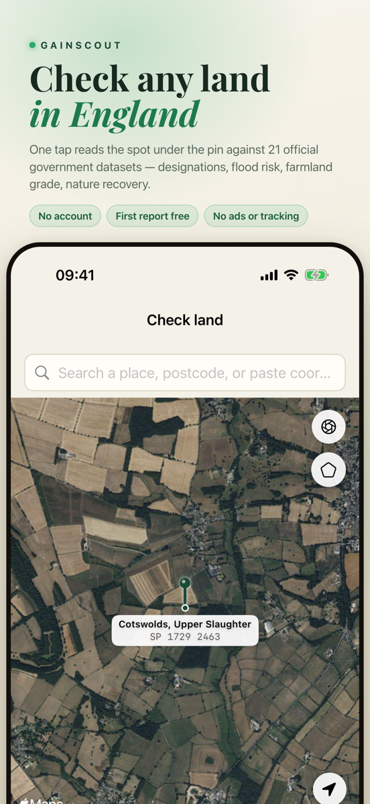
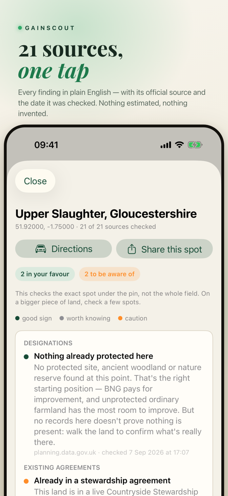
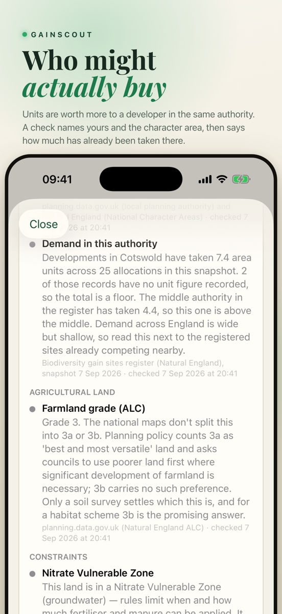
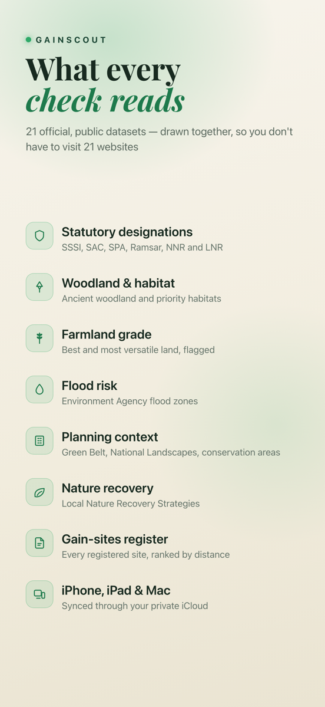
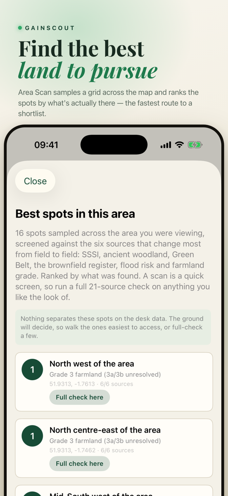
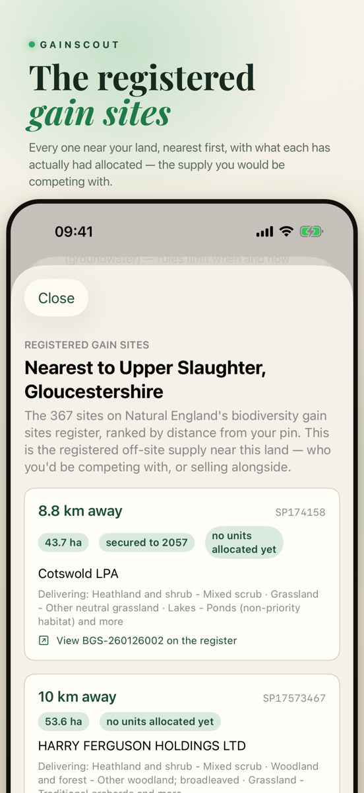

GainScout
Check any field in England for Biodiversity Net Gain potential, in one tap.
Get it on the App Store · Free New to Biodiversity Net Gain? Read the free guide →





GainScout is the fastest way to take a first look at whether a piece of land in England could be a candidate for Biodiversity Net Gain, the planning rule that has developers paying landowners to make land better for nature.
One button, official data
Point the map at a field and press one button. GainScout reads that exact spot against official public government datasets and gives you a plain English answer in seconds, with every finding's source and the date it was checked. Nothing is estimated and nothing is invented.
What every check reads
- Statutory designations: SSSI, SAC, SPA, Ramsar, national and local nature reserves
- Ancient woodland and priority habitats
- Agricultural land grade, with the best and most versatile farmland flagged
- Flood risk zones
- Green Belt, National Landscapes and conservation areas
- The Local Nature Recovery Strategy for the area
- Registered biodiversity gain sites nearby, the off site market you would price against
Built for the job
- Save sites and track them from watching to in talks
- Add a walkover checklist, notes and timestamped evidence photos
- Create a dated report with findings, sources, your photos and an OS grid reference, ready to hand to an agent, ecologist or buyer, and export it as a PDF
- Area Scan to rank the most promising spots across an area
- Draw your parcel to trace a boundary for instant acreage and a spot by spot check
- Sites, reports and photos synced through your own iCloud
Free to check, pay for what you need
Every check and every walkover feature is free to use. Buy a report when you need one, one credit or a pack of ten, or subscribe to GainScout Pro for unlimited land checks and reports plus every other Pro tool, billed monthly, quarterly or yearly, cancel any time.
Biodiversity Net Gain, explained for people who are not ecologists
Thinking about buying land to sell BNG units? Before you spend anything, walk through the whole thing in 32 steps: what a biodiversity unit actually is, what one is worth, what it costs to set up and to keep going for 30 years, what the public register shows about how many sites really sell, and every risk worth knowing. It includes a calculator built on the official Defra metric, and every figure is dated and linked to its source.
Start the guide →Written for landowners, farmers and first time buyers. Information, not advice.
Get GainScout
Free to download and free to check land. No account, no tracking. Reports and GainScout Pro are optional.
Get it on the App Store · Free